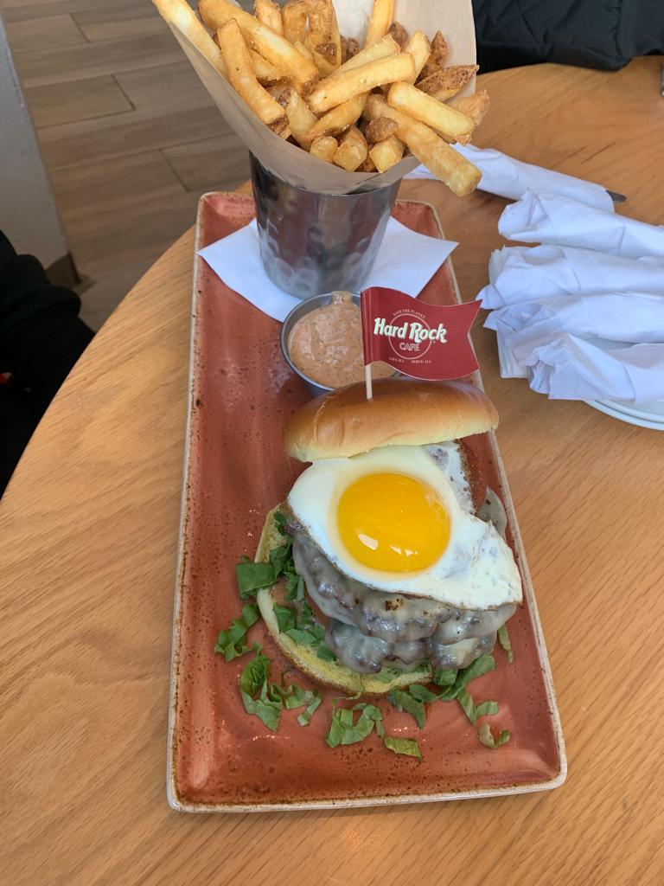

¿Cómo funciona una buena alimentación?
|
Una buena alimentación le da al cuerpo la energía y los nutrientes que necesita para rendir bien en el día a día. Consumir comidas simples pero saludables como huevo, atún, ensaladas frescas, pollo a la plancha, arroz o avena ayuda a que el cuerpo se mantenga fuerte, concentrado y con mejor ánimo. Los carbohidratos buenos como el arroz, las papas o la avena te dan energía estable; las proteínas como el atún, el huevo o el pollo ayudan a recuperar los músculos; y alimentos como el aguacate o las nueces aportan grasas saludables que mejoran la absorción de vitaminas. En resumen, comer balanceado te ayuda a rendir mejor tanto en los estudios como en el gimnasio. |
La importancia de una buena salud

|
Mantener una buena alimentación ayuda a prevenir enfermedades y mantener el cuerpo funcionando correctamente. Comidas sencillas como pollo al horno, arroz, ensaladas, huevo o frutas frescas aportan proteínas, vitaminas y energía estable para el día. |
La importancia de una buena cena
| Una buena cena ayuda a la recuperación muscular y a mantener energía estable durante la noche. |  |